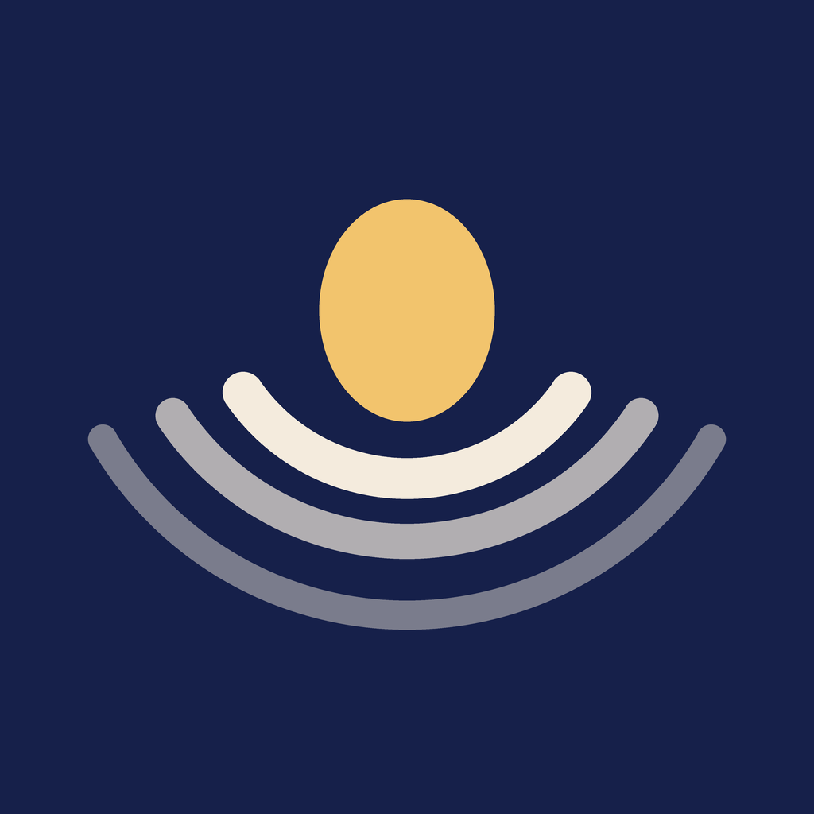

Noise NestPolítica de privacidad
Última actualización: octubre de 2026
En pocas palabras: Noise Nest no tiene cuentas ni servidores propios. Lo que apuntas (los sonidos que usas, el registro de sueño y los datos del bebé) se guarda solo en tu iPhone y nadie más tiene acceso. No hay publicidad, ni analítica, ni seguimiento entre apps.
1. Responsable
Miguel Gómez Cuesta, desarrollador de la app, a título personal.
Contacto: noisenest.soporte@gmail.com
2. Qué se guarda y dónde
Todo lo que introduces se guarda únicamente en el almacenamiento interno de la app en tu iPhone. No se envía a ningún servidor del desarrollador, porque no existe ninguno.
| Qué | Para qué |
|---|---|
| Preferencias: último sonido, volumen, temporizador, favoritos, mezclas y ajustes de la pantalla | Que la app se abra como la dejaste |
| Registro de sueño: siestas, noches y despertares con sus horas, y las notas y detalles que añadas | Enseñarte el día, las medias y las tendencias |
| Datos del bebé (opcionales): nombre y fecha de nacimiento | Mostrar su edad y ponerla en el diario que decidas enviar |
Estos datos no salen de tu iPhone salvo en dos casos que dependen de ti:
- Cuando envías el diario de sueño (en PDF o en texto) desde Tendencias. Se abre la hoja de compartir de iOS y el diario va a la app y a la persona que elijas, por ejemplo tu coach de sueño. Desde ese momento lo trata quien lo recibe y la app con la que lo envías.
- Las copias de seguridad de tu iPhone (iCloud o tu ordenador), si las tienes activadas. Las gestiona Apple según su propia política de privacidad, no el desarrollador.
La app no accede a la cámara, al micrófono, a la ubicación, a tus contactos, a tus fotos ni a la app Salud.
3. Actualizaciones de la app (Expo)
Para corregir errores y mejorar la app sin pasar cada vez por la App Store, Noise Nest comprueba al abrirse si hay una actualización en el servicio EAS Update de Expo (650 Industries, Inc., Estados Unidos). En esa comprobación se envían datos técnicos: la versión de la app, la plataforma, el canal de actualizaciones y un identificador aleatorio de instalación que genera la propia app y que no está ligado a tu nombre, a tu Apple ID ni a nada de lo que apuntas. Como en cualquier conexión a internet, Expo recibe también la dirección IP.
Expo usa esos datos para entregar la actualización y llevar estadísticas agregadas de qué versiones están en uso. No recibe nada de tu registro de sueño, de tus preferencias ni de los datos del bebé. Más información en la política de privacidad de Expo.
La base jurídica es el interés legítimo en mantener la app funcionando y segura (art. 6.1.f del RGPD). Las transferencias a Estados Unidos se amparan en las garantías que ofrece el propio proveedor.
4. Apple
La app se descarga desde la App Store. Apple trata los datos de tu compra y descarga según su política de privacidad. Si en tu iPhone has aceptado compartir análisis con los desarrolladores, Apple puede facilitar informes de fallos anónimos; el desarrollador solo los usa para corregir errores.
5. Publicidad y seguimiento
Ahora mismo la app no muestra publicidad ni usa herramientas de analítica o de seguimiento, ni comparte datos con terceros con fines comerciales. Si eso cambia, esta política se actualizará antes de que llegue a la app, y si hiciera falta tu permiso (por ejemplo, el de seguimiento de iOS), la app te lo pedirá.
6. Menores
Noise Nest está pensada para madres, padres y cuidadores adultos, no para que la usen los niños. Los datos del bebé que decidas apuntar se quedan en tu iPhone como el resto.
7. Cuánto tiempo se conservan y cómo borrarlos
Los datos están en tu iPhone mientras tengas la app instalada. Para borrarlos todos, elimina la app. También puedes borrar cada entrada del registro de sueño desde la propia app. El desarrollador no puede recuperar ni borrar nada porque no tiene copia.
Ten en cuenta que, por eso mismo, si borras la app o pierdes el iPhone sin copia de seguridad, el registro no se puede recuperar.
8. Tus derechos
El RGPD te reconoce los derechos de acceso, rectificación, supresión, limitación, portabilidad y oposición. Como los datos están solo en tu iPhone, los ejerces directamente desde la app. Si tienes cualquier duda, escribe a noisenest.soporte@gmail.com. También puedes reclamar ante la Agencia Española de Protección de Datos.
9. Cambios
Si cambia algo importante, se actualizará esta página y su fecha, y se avisará en la propia app cuando el cambio te afecte.